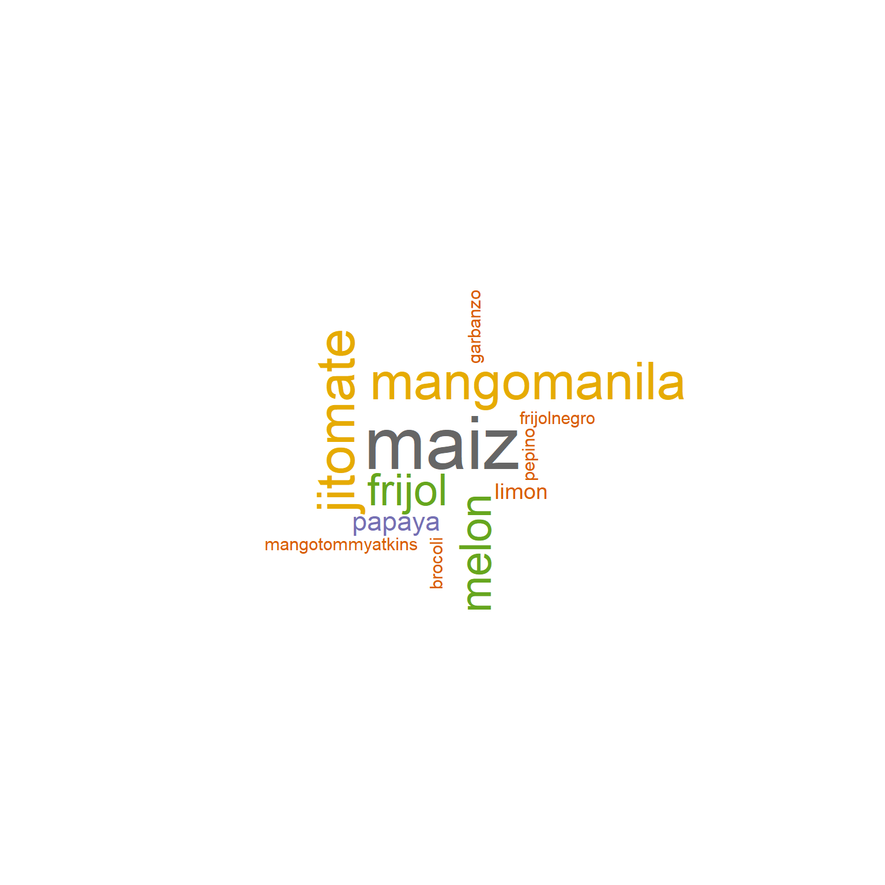
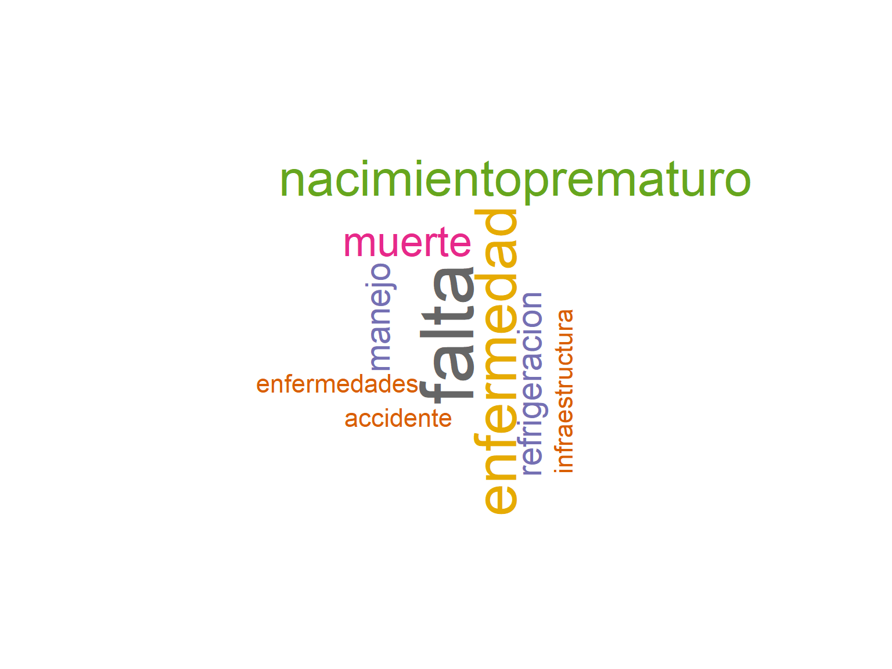

Resultados Agropecuario
Consideración inicial acerca de las cifras que se obtienen de la muestra.
Antes de dar paso al análisis de los datos captados en el operativo de prueba, se debe tener presente que la muestra no fue construida en forma probabilística, de tal forma que no pueden obtenerse inferencias y ni siquiera pueden usarse las cifras obtenidas como indicadores de estimaciones o aproximaciones a los datos para propósitos de publicación de los mismos. Todas las cifras que a continuación se presentan, son indicadores construidos con fines de análisis para este proyecto.
Resumen de entrevistas captadas.
Se obtuvieron entrevistas completas en 75 unidades agropecuarias, de las cuales 58 corresponden a unidades de producción exclusivamente agrícola, 7 de producción exclusivamente pecuaria, y 10 donde se tiene tanto producción agrícola, como ganadera o pecuaria.
En consecuencia, se tiene información sobre la producción de 89 productos agrícolas y de 25 productos pecuarios. De ellos, se obtuvo un total de 98 registros de productos agrícolas con pérdidas, y 25 productos pecuarios en la misma situación.
Estos son por lo tanto los casos sobre los cuales se puede analizar y mostrar a continuación la información resumida en forma de indicadores y gráficos.
Por la diferencia que existe entre las variables captadas para las unidades agrícolas y las pecuarias, se manejan sus resultados en apartados distintos.
Unidades Agrícolas
Registro del manejo o la pérdida de productos.
De las 68 unidades de producción agrícola entrevistadas, sólo en 20 de ellas se lleva registro del manejo o pérdidas de los productos.
Los procesos en que se llevan a cabo dichos registros se distribuyen del siguiente modo:
Sólo en 3 unidades de producción se declaró llevar registro en todos los procesos.
Número de productos declarados
Se encontró que la mayoría de las unidades de producción declararon un sólo producto. La distribución de productos declarados por unidad agrícola fue la siguiente:
| Total | 1 producto | 2 productos | 3 productos | 4 o más productos |
|---|---|---|---|---|
| 68 | 52 | 12 | 3 | 1 |
Tipos de productos
En este caso se capturaron en forma de texto los productos agrícolas. Se muestra a continuación una nube de palabras y una gráfica de frecuencias de los productos declarados.

Cuyas frecuencias son:
Como dato complementario, en 74 registros (83%) se declaró que se trata de productos para consumo humano en forma exclusiva, en otros 3 para consumo animal y en 10 casos para ambos tipos de consumo. Un registro no especificó esta respuesta.
Cosecha anual de los productos más frecuentes
En este caso, a efecto de simplificar, se toman los productos de la gráfica anterior para obtener la cantidad cosechada anual. Se excluye la papaya, ya que contiene datos declarados muy altos (un dato de 15000 toneladas y otro de 4000 toneladas anuales, que distorsionarían el gráfico).
Otros datos que se captaron y que deberían servir para corroborar el dato anterior, es el de la cosecha estimada (la que se esperaba obtener, en color azul) y la cosecha final (la que se obtuvo efectivamente, en color naranja).
Procesos en los que se declararon pérdidas
Se resumen en la siguiente gráfica:
Pérdidas
Se hace complicado mostrar este dato debido a la gran variabilidad de pérdidas declaradas para algunos cultivos. Para tratar de mostrar esta variabilidad, a continuación se presenta un boxplot para los cultivos con declaración más frecuente de pérdidas.
Si excluimos a los cultivos de papaya y mango manila, así como un sólo caso de pérdida de trigo de 300 toneladas, podemos obtener una gráfica más homogénea:
Dados estos resultados, calculamos ahora la pérdida en términos porcentuales respecto a la cosecha anual, para observar en términos relativos si se muestra alguna tendencia.
En lo que respecta al dinero perdido, si bien sabemos que no es posible utilizarlo como una variable confiable dadas las diferencias por las variaciones temporales (inflación), así como por las limitaciones conceptuales alrededor de su captación, se puede hacer una estimación gruesa de las pérdidas económicas derivadas para este conjunto de datos, que pueden dar alguna idea del monto real involucrado en el fenómeno. Se muestra a continuación, la distribución por tipo de cultivo.
El monto global de las pérdidas de los 89 registros analizados asciende a $12,818,007.
Causas de las pérdidas
Dado que esta variable se dejó para la captura en pregunta abierta, se construye una nube de palabras para observar los conceptos obtenidos por el instrumento de captación.
Destino de las pérdidas
Para analizar los destinos, repetimos el análisis de textos basado en nubes de palabras, para la variable abierta referente al destino de las pérdidas.
Medidas para evitar o disminuir las pérdidas
Finalmente, aplicamos la misma herramienta, pero ahora al texto referente a las medidas que se han tomado para evitar o disminuir la pérdida de los productos.
Unidades Ganaderas o Pecuarias
Registro del manejo o la pérdida de productos.
En lo que respecta a las unidades ganaderas o pecuarias, de las 17 unidades de producción entrevistadas, se lleva registro del manejo o pérdida de los productos en 6 de ellas.
Los procesos en que se llevan a cabo dichos registros son:
| Proceso | Número de unidades ganaderas o pecuarias en las que hay registro |
|---|---|
| Nacimiento | 4 |
| Desarrollo/engorda | 3 |
| Transporte | 1 |
| Sacrificio/muerte | 3 |
| Almacenamiento | 2 |
Número de productos declarados
Igual que sucede con las unidades agrícolas, la mayoría sólo maneja un sólo producto:
| Total | 1 producto | 2 productos | 3 productos |
|---|---|---|---|
| 17 | 12 | 2 | 3 |
Tipos de productos
Los productos declarados fueron, principalmente:
El resto, con frecuencia de 1 fueron: Becerros, Cerdos, Chivos, Chorizo, Conejos, Lácteos, Miel, Pavos, Queso, Vacas y Yogurt.
Producción anual
Destacan en este rubro una unidad de producción dedicada a la piscicultura, la cual declaró una producción anual de tilapia de 4,200,000 unidades.
Respecto a la ganadería, en general se entrevistó a establecimientos pequeños. Una unidad de producción de ganado bovino reportó anualmente 150 cabezas. Las otras seis unidades productoras de este ganado que se entrevistaron, reportaron una producción anual promedio de 8 cabezas por unidad.
De ganado ovino se reportaron 4 unidades con producciones de 100, 60, 50 y 19 cabezas anuales, lo que da una idea de la variabilidad del tamaño de las unidades visitadas.
Sobre el destino de la producción, en 21 de los 25 productos declarados el destino es el mercado nacional minorista, y sólo en 4 el nacional mayorista. En una de estas 4 unidades un 30% de su producto se va al mercado extranjero.
Procesos donde se reportan pérdidas
Los procesos referentes a la crianza de animales donde se reportan pérdidas se distribuyen del siguiente modo:

Pérdidas
De forma específica destaca la pérdida declarada de 420,000 unidades de tilapia por parte de la unidad de producción que antes se mencionó, lo que equivale al 10% de su producción.
En el caso de las unidades de producción de ganado bovino, se declararon pérdidas acumuladas de 19 cabezas, que representan un 39.5% de la producción anual de dichas unidades.
Las unidades productoras de ovinos reportaron pérdidas acumuladas de 50 cabezas, el 22% de su producción anual.
El monto acumulado de las pérdidas declaradas en términos monetarios, de los 25 casos descritos, fue de $568,900. Por supuesto, se debe entender que esta estimación tiene deficiencias en lo conceptual, pero se presenta como un dato adicional, a efecto de dimensionar el problema económico que la pérdida representa.
Causas de la pérdida
Recurrimos nuevamente a la herramienta de nube de palabras para visualizar las respuestas obtenidas respecto a las causas de la pérdida durante la producción ganadera o pecuaria.

Destino de las pérdidas y medidas para disminuirla
No hay gran variedad de conceptos en lo declarado en esta pregunta. La mayoría hace referencia al hecho de que el animal muerto no puede recuperarse, por lo que se entierra, se deja para los animales carroñeros, o se deja al aire libre para que se descomponga.
Respecto a las medidas para evitar las pérdidas, las pocas respuestas abiertas obtenidas mencionan en su mayoría a los procesos de vacunación y desparasitación, así como de balancear y vigilar la alimentación de los animales.